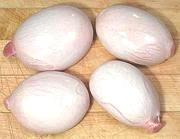

SAFARI
Users
| General Cuts | ||
|---|---|---|
| Randoms | Various | Goat is often sold in this form here in Los Angeles, cut into random chunks, cut from any part except the higher value leg. The bone structure of the chunks can be a little complex making deboning a hassle, but the price can be fairly low - in 2012 I've bought these for US $1.99/#. The bones and trimmings make very good soup stock for use in recipes. Meat yield will be between 34% and 54% depending on how much fat is on the pieces. |
| Leg | Shank End |  This cut is the meatiest and least difficult to disassemble for meat, but
there's a bit more complexity and bone than you'd expect from the photo.
The knee is right in the middle of it.
This cut is the meatiest and least difficult to disassemble for meat, but
there's a bit more complexity and bone than you'd expect from the photo.
The knee is right in the middle of it.
The photo specimen was 7 inches wide at the cut end, 4 inches high and 9 inches long, weighing 3.2 pounds. Yield was 2 pounds 1 ounce clear meat (64%) and 9 ounces bone, the rest being fat. |
| Loin End | This cut includes the split backbone leading to the tail (top right edge in the photo, half the pelvic bone, and the pelvic end of the leg bone. It also includes a lump of interior fat (center in photo) and a thick blanket of fat on the outside (underside in photo). This makes it difficult to disassemble for clear meat and the yield is relatively low. The photo specimen weighed 5.8 pounds and yielded 2 pounds 3 ounces of clear meat (38%) 13-1/2 ounces of bone and the rest was fat. | |
| Spleen |
 Goat Spleen is quite popular in India, especially Tamil Nadu, but not
much available in North America. Lamb Spleen, usually labeled "Lamb
Melts", are identical in appearance and cooking properties to Goat
Spleen, so are an excellent substitute (the photo is of Lamb Spleen).
For details, see our Lamb Spleen
page.
Goat Spleen is quite popular in India, especially Tamil Nadu, but not
much available in North America. Lamb Spleen, usually labeled "Lamb
Melts", are identical in appearance and cooking properties to Goat
Spleen, so are an excellent substitute (the photo is of Lamb Spleen).
For details, see our Lamb Spleen
page. | |
|
Testicles Goat Fries |
 Goat Nuts are unlikely to be found commercially in North America, but Sheep Nuts are pretty common in markets serving various ethnic communities here. Sheep and Goats are so closely related there should be no significant difference. The photo is of sheep nuts, shipped frozen from New Zealand. | |
| Fat | Goat fat turns solid at a fairly high temperature - I've measured 88°F/31°C on the surface of solid chunks. It has a smoke point around 370°F/188°C, but in tests frying potaoes I did not particularly like the favor or frying characteristics. | |
Links
- G1 - Cuts - Australian Chart. - At Scotty's Wholesale, AU.